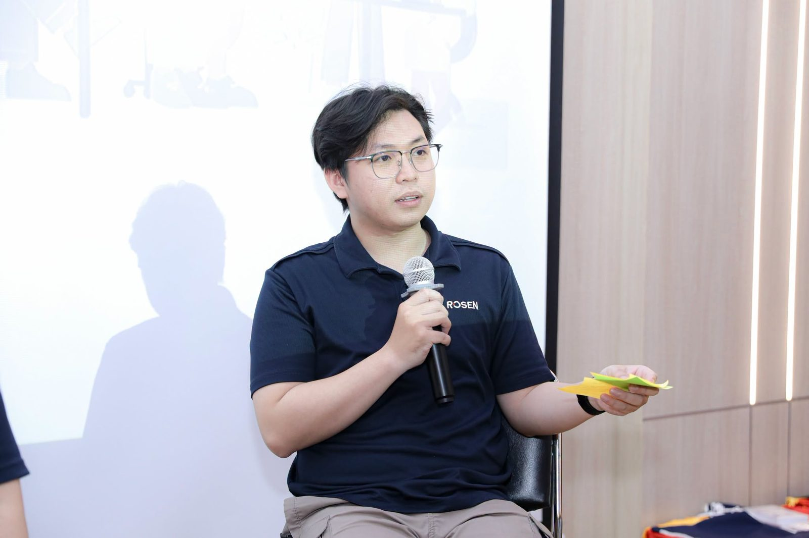
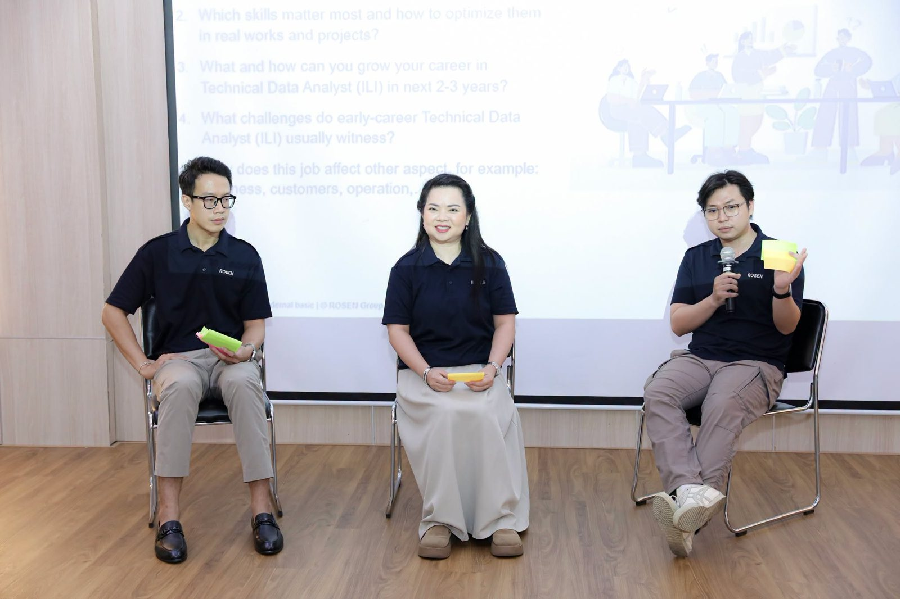

Back to Campus: Career Talks at HCMUT and IUH


I went back to two universities, Ho Chi Minh City University of Technology (HCMUT) and the Industrial University of Ho Chi Minh City (IUH), to share career opportunities at ROSEN and answer students’ questions about technical skills.
What we talked about
Together with my ROSEN colleagues, we took questions from students about the Technical Data Analyst (ILI) role:
- Skills. Which skills matter most, and how to put them to work in real projects.
- Growth. How a career as a Technical Data Analyst (ILI) can develop over the next two to three years.
- Challenges. What early-career analysts usually run into.
- Impact. How the work connects to the wider business, its customers and operations.